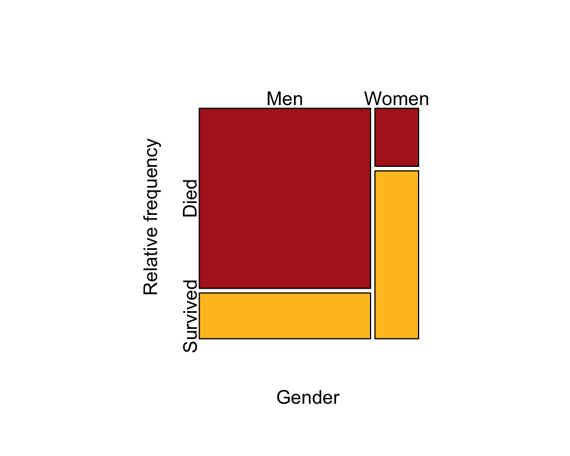
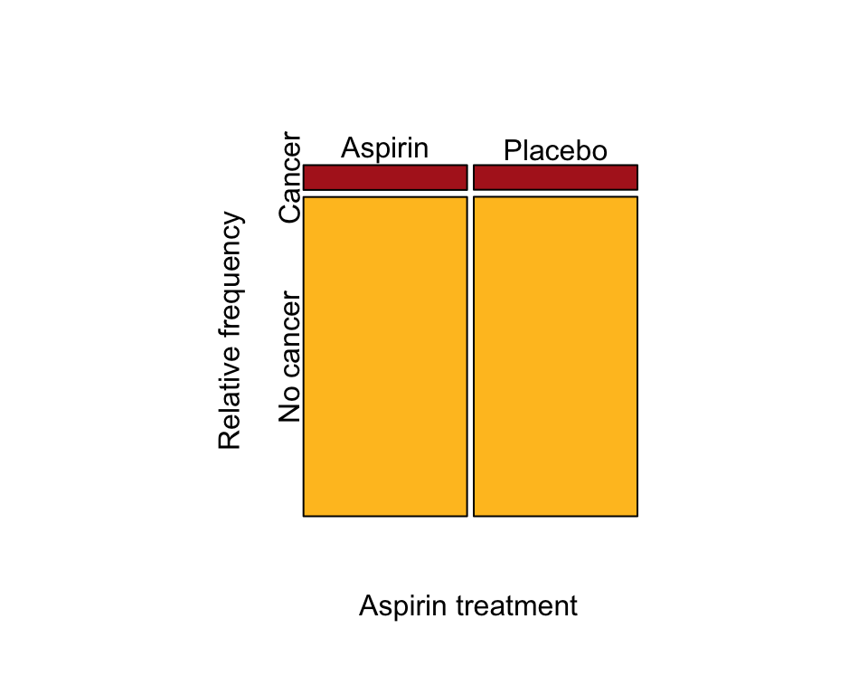
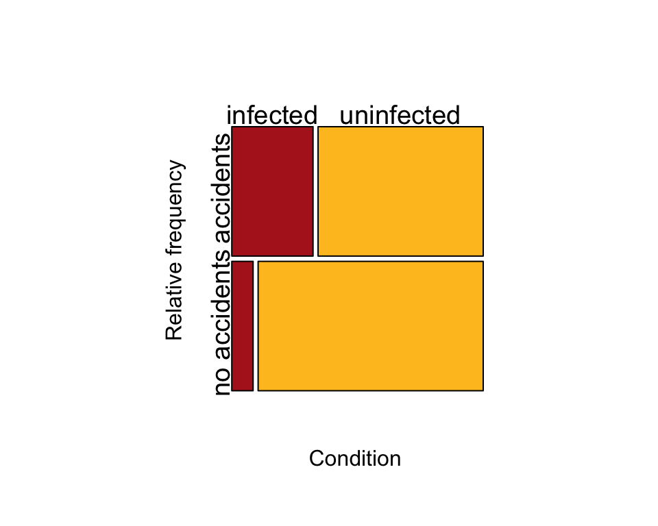
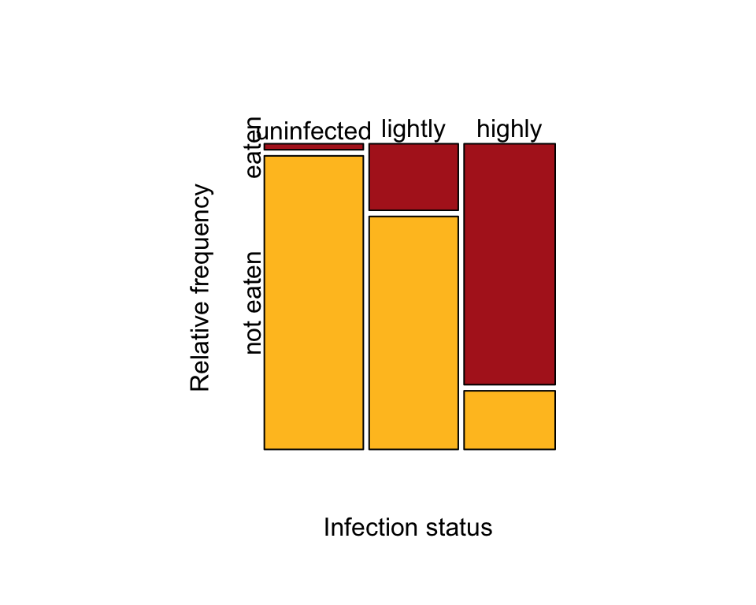

Learn R by example, Chapter 9:
Contingency analysis
We used R to analyze all examples in Chapter 9. We put the code here so that you can too.
Also see our lab on contingency analysis using R.
New methods on this page
-
Relative risk and odds ratio using the
epitoolspackage:riskratio(t(cancerTable), rev = "both", method = "wald") oddsratio(cancerTable, method = "wald") -
\(\chi^2\) contingency test:
chisq.test(worm$fate, worm$infection, correct = FALSE) -
Fisher’s exact test:
fisher.test(vampire$bitten, vampire$estrous) -
Other new methods:
- Mosaic plot for a case-control study.
- Row and column sums in a contingency table.
Load required packages
We’ll use the epitools add on package to calculate relative risk and odds ratio. You might need to install it first if you have not already done so.
install.packages("epitools", dependencies = TRUE) # only if not yet installedlibrary(epitools)Figure 9.1-1. Survival and gender
Read and inspect data
The option stringsAsFactors = FALSE keeps character data in character format rather than convert them to factors, which can sometimes be a little harder to work with.
titanic <- read.csv(
url("https://whitlockschluter3e.zoology.ubc.ca/Data/chapter09/chap09f01Titanic.csv"),
stringsAsFactors = FALSE)
head(titanic)## gender survival
## 1 Men Survived
## 2 Men Survived
## 3 Men Survived
## 4 Men Survived
## 5 Men Survived
## 6 Men SurvivedContingency table
Next, make a contingency table for the association between survival and gender. R orders the categories of each variable alphabetically, which works here.
titanicTable <- table(titanic$survival, titanic$gender, useNA = c("ifany"))
titanicTable##
## Men Women
## Died 1329 109
## Survived 338 316Mosaic plot
Pass the table to the mosaicplot() function to make the plot. We flip (transpose) the contingency table (t(titanicTable) so that the mosaic plot produced has the explanatory variable (gender) in the columns and the response variable (survival) in the rows.
par(pty = "s") # makes a square plot
mosaicplot( t(titanicTable), col = c("firebrick", "goldenrod1"), cex.axis = 1,
sub = "Gender", ylab = "Relative frequency", main = "")
Example 9.2. Aspirin and cancer
Relative risk and odds ratio to estimate association between aspirin treatment and cancer incidence in a 2x2 contingency table.
Read and inspect the data.
cancer <- read.csv(
url("https://whitlockschluter3e.zoology.ubc.ca/Data/chapter09/chap09e2AspirinCancer.csv"),
stringsAsFactors = FALSE)
head(cancer)## aspirinTreatment cancer
## 1 Aspirin Cancer
## 2 Aspirin Cancer
## 3 Aspirin Cancer
## 4 Aspirin Cancer
## 5 Aspirin Cancer
## 6 Aspirin CancerContingency table
Next, make a 2 x 2 contingency table showing association between aspirin treatment and cancer incidence (Table 9.2-1). R orders the categories of each variable alphabetically, which works here.
cancerTable <- table(cancer$cancer, cancer$aspirinTreatment)
cancerTable##
## Aspirin Placebo
## Cancer 1438 1427
## No cancer 18496 18515Mosaic plot
A mosaic plot showing the association (Figure 9.2-1).
par(pty = "s") # makes a square plot
mosaicplot( t(cancerTable), col = c("firebrick", "goldenrod1"), cex.axis = 1,
sub = "Aspirin treatment", ylab = "Relative frequency", main = "")
Relative risk
The relative risk (RR) is the probability of the undesired outcome (cancer) in the treatment group (aspirin) divided by the probability in the control (placebo) group.
Our contingency table cancerTable, has the undesired outcome in the treatment group in the top left position. The riskratio() function expects the opposite layout, so we need to flip the table and reverse the order of the rows to use it. We can do this all at once with the following arguments to the riskratio() function. The full output of the command is shown below.
RR <- riskratio(t(cancerTable), rev = "both", method = "wald")
RR## $data
##
## No cancer Cancer Total
## Placebo 18515 1427 19942
## Aspirin 18496 1438 19934
## Total 37011 2865 39876
##
## $measure
## risk ratio with 95% C.I.
## estimate lower upper
## Placebo 1.000000 NA NA
## Aspirin 1.008113 0.9394365 1.08181
##
## $p.value
## two-sided
## midp.exact fisher.exact chi.square
## Placebo NA NA NA
## Aspirin 0.8224348 0.8310911 0.8223986
##
## $correction
## [1] FALSE
##
## attr(,"method")
## [1] "Unconditional MLE & normal approximation (Wald) CI"Notice that the resulting estimate RR differs slightly from the relative risk value given in the book for these same data (1.007) because rounding error here is reduced.
To grab the key output, namely the estimate of the relative risk and the 95% confidence interval, use the following command:
RR$measure[2,]## estimate lower upper
## 1.0081129 0.9394365 1.0818098Odds ratio
To obtain the odds ratio (OR), use the oddsratio() function on cancerTable as is.
OR <- oddsratio(cancerTable, method = "wald")
OR## $data
##
## Aspirin Placebo Total
## Cancer 1438 1427 2865
## No cancer 18496 18515 37011
## Total 19934 19942 39876
##
## $measure
## odds ratio with 95% C.I.
## estimate lower upper
## Cancer 1.000000 NA NA
## No cancer 1.008744 0.9349043 1.088415
##
## $p.value
## two-sided
## midp.exact fisher.exact chi.square
## Cancer NA NA NA
## No cancer 0.8224348 0.8310911 0.8223986
##
## $correction
## [1] FALSE
##
## attr(,"method")
## [1] "Unconditional MLE & normal approximation (Wald) CI"The resulting output of oddsratio() includes a lot of incidental computations. To grab the essential output for the odds ratio, including the 95% confidence interval, use the following.
OR$measure[2, ]## estimate lower upper
## 1.0087436 0.9349043 1.0884148Example 9.3. Toxoplasma and driving
Odds ratio to estimate association between Toxoplasma infection and driving accidents in a 2 x 2 case-control study.
Read and inspect the data.
toxoplasma <- read.csv(
url("https://whitlockschluter3e.zoology.ubc.ca/Data/chapter09/chap09e3ToxoplasmaAndAccidents.csv"), stringsAsFactors = FALSE)
head(toxoplasma)## condition accident
## 1 infected accidents
## 2 infected accidents
## 3 infected accidents
## 4 infected accidents
## 5 infected accidents
## 6 infected accidentsContingency table
First, make the 2 x 2 contingency table (Table 9.3-1). The table that results has the undesired outcome (accidents) for the treatment group (infected) in the top left.
toxTable <- table(toxoplasma$accident, toxoplasma$condition)
toxTable##
## infected uninfected
## accidents 61 124
## no accidents 16 169Mosaic plot
Next, make the mosaic plot for a case-control study (Figure 9.3-1).
par(pty = "s") # makes a square plot
mosaicplot(toxTable, col=c("firebrick", "goldenrod1"), cex.axis = 1.2,
sub = "Condition", dir = c("h","v"), ylab = "Relative frequency", main = "")
Odds ratio
Odds ratio using epitools.
OR <- oddsratio(toxTable, method = "wald")
OR$measure[2,]## estimate lower upper
## 5.196069 2.859352 9.442394Example 9.4. Worm gets bird
\(\chi^2\) contingency test to test association between trematode infection status of killifish and their fate (eaten or not eaten) in the presence of predatory birds.
Read and inspect the data.
worm <- read.csv(
url("https://whitlockschluter3e.zoology.ubc.ca/Data/chapter09/chap09e4WormGetsBird.csv"),
stringsAsFactors = FALSE)
head(worm)## infection fate
## 1 uninfected eaten
## 2 lightly eaten
## 3 lightly eaten
## 4 lightly eaten
## 5 lightly eaten
## 6 lightly eatenContingency table
In the contingency table in the book (Table 9.4-1), we ordered the infection categories from uninfected to highly infected. Use factor() to set the order. Then make the contingency table. The addmargins() function adds the row and column sums to the display of the table.
worm$infection <- factor(worm$infection,
levels = c("uninfected", "lightly", "highly"))
wormTable <- table(worm$fate, worm$infection)
addmargins(wormTable)##
## uninfected lightly highly Sum
## eaten 1 10 37 48
## not eaten 49 35 9 93
## Sum 50 45 46 141Mosaic plot
Use the table to make the mosaic plot (Figure 9.4-1).
par(pty = "s") # makes a square plot
mosaicplot( t(wormTable), col = c("firebrick", "goldenrod1"), cex.axis = 1,
sub = "Infection status", ylab = "Relative frequency", main = "")
\(\chi^2\) contingency test
Carry out the \(\chi^2\) contingency test. Include the argument correct = FALSE to avoid Yates’ correction. This has no effect except in 2 x 2 tables, but we keep it here for demonstration purposes.
saveChiTest <- chisq.test(worm$fate, worm$infection, correct = FALSE)
saveChiTest##
## Pearson's Chi-squared test
##
## data: worm$fate and worm$infection
## X-squared = 69.756, df = 2, p-value = 7.124e-16The expected frequencies under null hypothesis are included with the results, but aren’t normally shown. Type saveChiTest$expected to extract them. Include the addmargins() function if you want to see the row and column sums too.
addmargins(saveChiTest$expected)## worm$infection
## worm$fate uninfected lightly highly Sum
## eaten 17.02128 15.31915 15.65957 48
## not eaten 32.97872 29.68085 30.34043 93
## Sum 50.00000 45.00000 46.00000 141Example 9.5. Vampire bat feeding
Fisher’s exact test of association between estrous status of cows and whether cows were bitten by vampire bats.
Read and inspect the data.
vampire <- read.csv(
url("https://whitlockschluter3e.zoology.ubc.ca/Data/chapter09/chap09e5VampireBites.csv"),
stringsAsFactors = FALSE)Contingency table
Make the 2 x 2 contingency table (Table 9.5-1).
vampireTable <- table(vampire$bitten, vampire$estrous)
vampireTable##
## estrous no estrous
## bitten 15 6
## not bitten 7 322\(\chi^2\) contingency test
Get the expected frequencies under null hypothesis of independence using chisq.test(). R complains because of the violation of assumptions. Just in case you hadn’t noticed.
saveTest <- chisq.test(vampire$bitten, vampire$estrous, correct = FALSE) ## Warning in chisq.test(vampire$bitten, vampire$estrous, correct = FALSE):
## Chi-squared approximation may be incorrectsaveTest$expected## vampire$estrous
## vampire$bitten estrous no estrous
## bitten 1.32 19.68
## not bitten 20.68 308.32Fisher’s exact test
The output includes an estimate of the odds ratio, but it uses a different method than is used in our book.
fisher.test(vampire$bitten, vampire$estrous)##
## Fisher's Exact Test for Count Data
##
## data: vampire$bitten and vampire$estrous
## p-value < 2.2e-16
## alternative hypothesis: true odds ratio is not equal to 1
## 95 percent confidence interval:
## 29.94742 457.26860
## sample estimates:
## odds ratio
## 108.3894